Устройства Bluetooth встречаются довольно часто в наше время. Это простой и дешевый способ добавить поддержку беспроводных технологий для смартфона или любого другого гаджета. Система Linux может использовать различные протоколы: OBEX, A2DP, DUN, HID и другие для взаимодействия с различными устройствами.
В этой статье мы рассмотрим как выполняется настройка Bluetooth Ubuntu 16.04. Рассмотрим как установить драйвера и настроить связь между двумя устройствами.
Большинство Bluetooth адаптеров выполнены в виде USB и могут быть настроены с помощью утилит HCL. Некоторые устройства, такие как Atheros, требуют для своей работы установленных прошивок в системе.
Для установки всех необходимых программ выполните такую команду:
sudo apt-get install bluetooth bluez bluez-tools rfkill rfcomm
Дальше установите прошивки для адаптеров Atheros, если это необходимо:
sudo apt-get install bluez-firmware firmware-atheros
Затем запустите службу управления Bluetooth:
sudo service bluetooth start
Сканирование устройств Bluetooth
Перед тем, как перейти к сканированию устройств нужно убедиться что ваш bluetooth адаптер подключен и не заблокирован с помощью rfkill:
sudo rfkill list
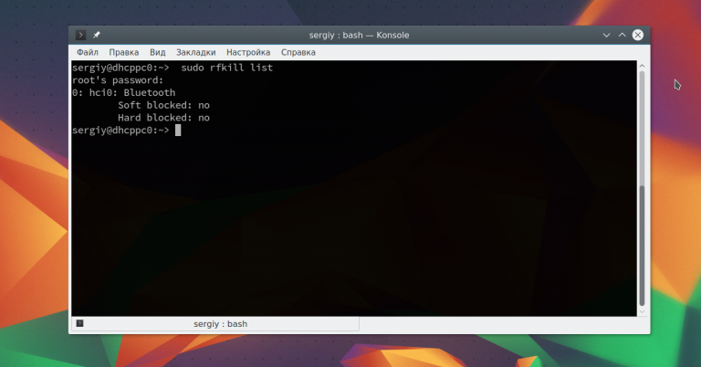
Если устройство заблокировано, программной или аппаратной блокировкой, необходимо разблокировать его с помощью команды rfkill:
sudo rfkill unblock bluetooth
Включить адаптер можно с помощью команды hciconfig:
sudo hciconfig hci0 up
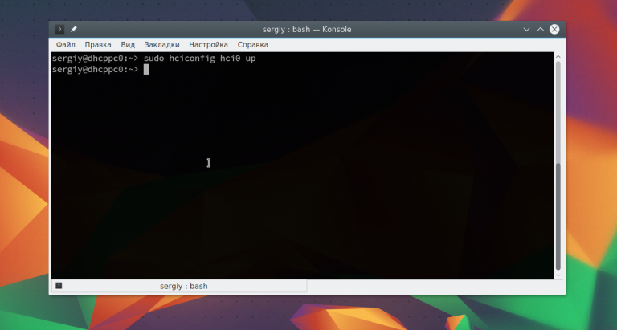
Дальше можно начать сканирование. Только перед этим убедитесь, что на другом устройстве Bluetooth включен и не находится в скрытом режиме. Для сканирования выполните:
sudo hcitool scan
Кстати, для сканирования BLE устройств (устройств с низким энергопортеблением, low energy), можно использовать такую команду:
sudo hcitool lescan
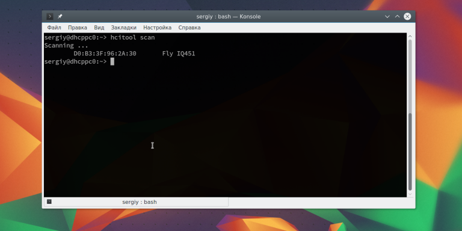
После завершения вы увидите доступное устройство. Здесь будет отображаться его имя и MAC адрес.
Чтобы узнать более подробную информацию об устройстве, вы можете использовать утилиту sdptool:
sdptool browse D0:B3:3F:96:2A:30
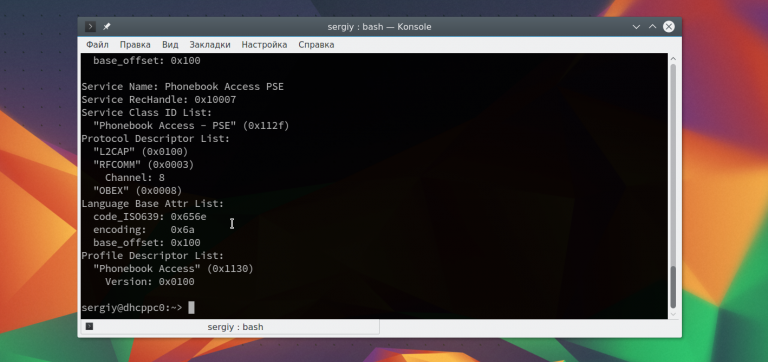
Вы можете сразу отфильтровать какие возможности поддерживает обнаруженное устройство:
sdptool browse D0:B3:3F:96:2A:30 | grep 'Service Name:'
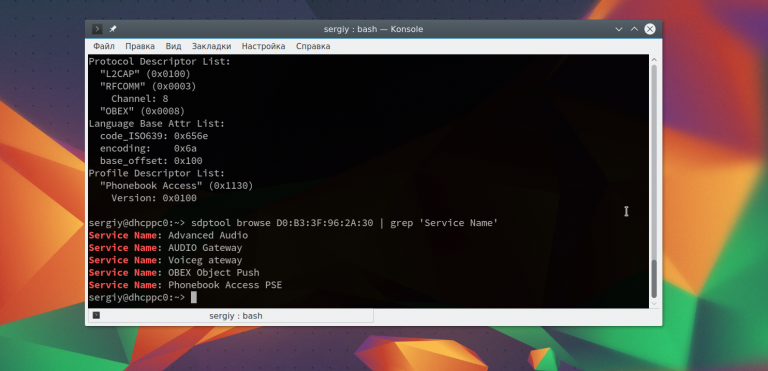
Также вы можете использовать интерактивный инструмент bluetoothctl:
# bluetoothctl
[bluetooth]# info D0:B3:3F:96:2A:30
Также вы можете проверить доступность удаленного устройства с помощью утилиты ping:
sudo l2ping D0:B3:3F:96:2A:30
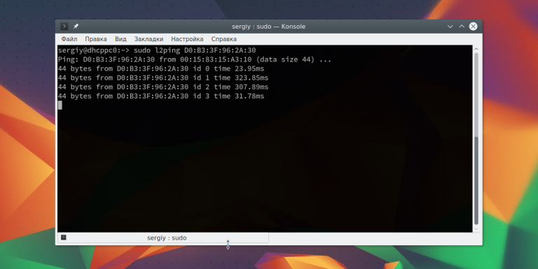
Для совместной работы устройств Bluetooth нужно настроить их сопряжение. Для этого используется команда RFCOMM. Эта команда требует полномочий суперпользователя. Синтаксис команды такой:
sudo rfcomm connect устройство_адаптера mac_адрес_цели канал
Например, подключимся к нашему устройству на втором канале:
sudo rfcomm connect hci0 D0:B3:3F:96:2A:30 2
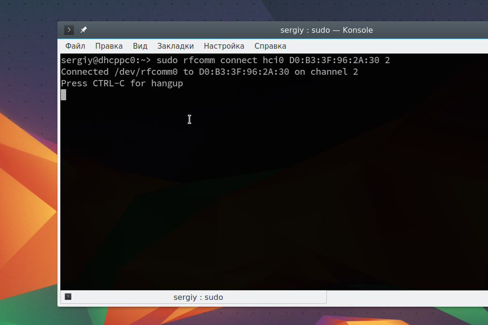
Теперь на другом устройстве появиться запрос на соединение и вам нужно будет ввести одинаковый pin на обоих устройствах. После этого оно будет доступно через файл /dev/rfcomm0. Не закрывайте терминал, чтобы соединение оставалось активным. Вы можете посмотреть список подключений с помощью hcitool:
hcitool con
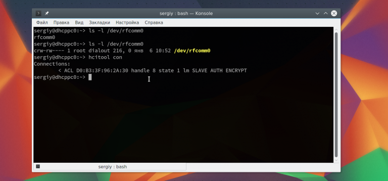
Отправка и прием файлов по OBEX
Дальше вы можете очень просто отправить файл на удаленное устройство с помощью протокола OBEX. Синтаксис:
sudo bt-obex -p MAC_адрес_устройства /путь/к/файлу
Например:
sudo bt-obex -p D0:B3:3F:96:2A:30 ~/img/some_pic.png
Чтобы получить файл вам нужно запустить сервис obex в режиме прослушивания с помощью опции -s:
bt-obex -s /path/to/output/folder
Здесь вам нужно указать путь к папке, куда нужно сохранить полученный файл. После выполнения этих настроек Bluetooth Ubuntu, вы можете передать любой файл с телефона. Вы также можете запустить FTP сеанс с устройством, для просмотра файлов, которые на нем есть:
sudo bt-obex -f MAC_адрес_устройства
Раньше использование Dial-up сети было очень популярным. Сейчас эта технология почти не используется. Но, возможно, понадобиться раздать интернет от вашего телефона на компьютер. Для этого можно использовать два протокола: DUN — более старый и BNEP, более похожий на работу локальной сети.
Чтобы определить поддерживает ли устройство работу по протоколу DUN нужно использовать правильный канал rfcomm. Нужно использовать канал 15:
sudo rfcomm bind D0:B3:3F:96:2A:30 15
Если протокол поддерживается, то у вас появиться устройство rfcomm0. Дальше вы можете использовать NetworkManager для подключения к сети.
Что касается BNEP, то здесь вам уже не нужно использовать rfcomm, все протоколы будут обрабатываться bluez. Все что нужно, это Bluez и NetworkManager. Добавьте новое соединение Bluetooth:
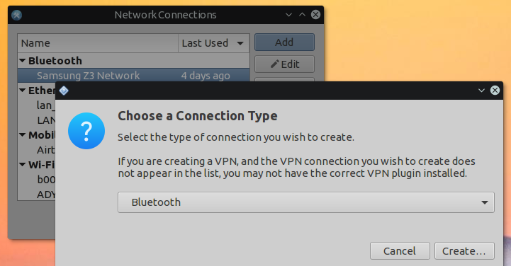
Выберите найденную сеть:
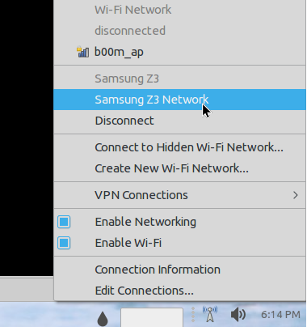
Дальше вы можете посмотреть информацию о подключении и использовать сеть:
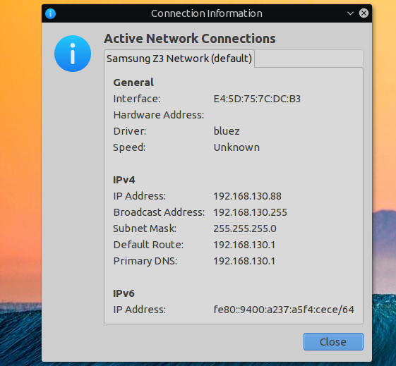
В этой статье мы рассмотрели как выполняется настройка Bluetooth Ubuntu 16.04. Все работает очень просто, и хотя в графическом интерфейсе может быть не совсем понятно как что настроить, то в терминале все точно и понятно. Если у вас остались вопросы, спрашивайте в комментариях!